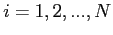
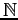
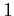
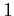
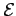

Next: The Simplified MEP Model
Up: The Scattering Process
Previous: The Scattering Process
Contents
In GNU Archimedes the choice of the scattering is quite simple. First of all, we select randomly a scattering process and after this has been done, we compute the particle state after the scattering event. To this purpose we define the following functions
for

where 
is, as before, the number of scattering taken into account during the simulation. A scattering mechanism is, then, choosed generating a number  lying between 0
and 
and doing the following comparison
lying between 0
and 
and doing the following comparison
 |
(5.25) |
for a particle with energy 
.
Didier Link
2007-05-18